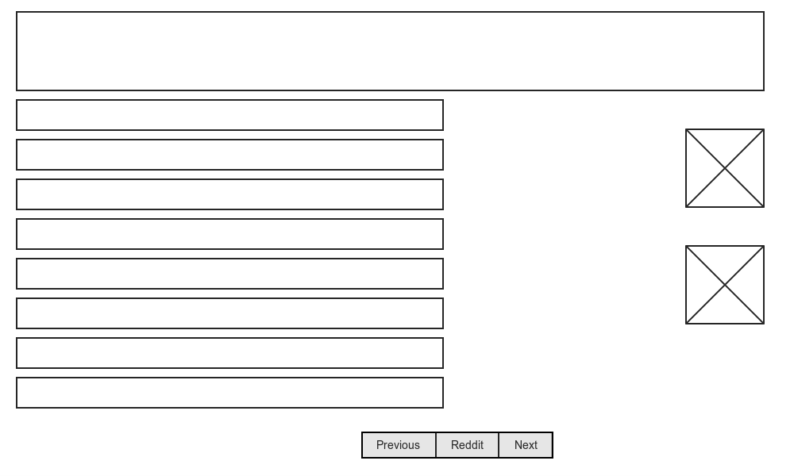
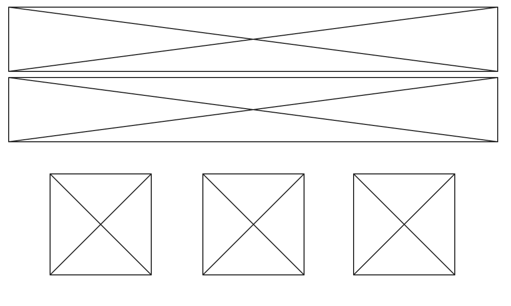
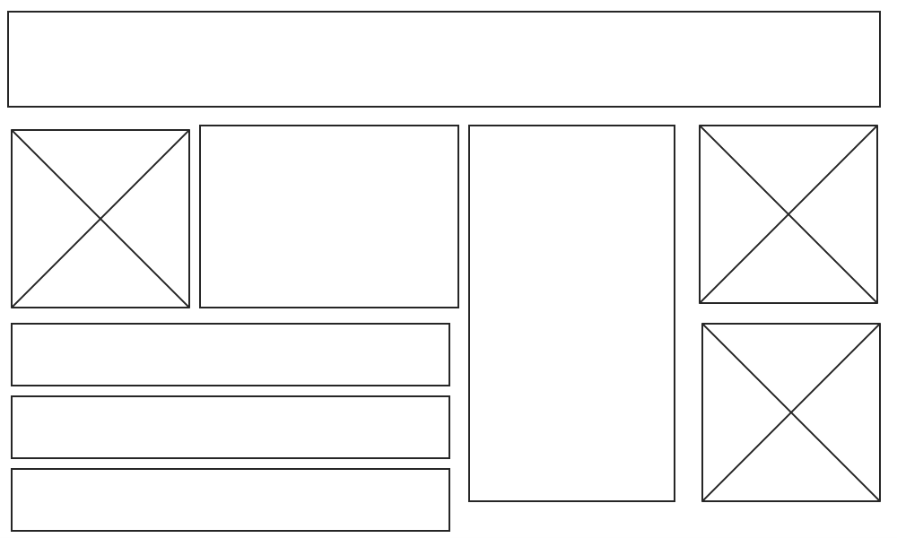

Wireframes

Here's the layout of Reddit's site. They got rid of all of the clutter, so you pretty much have no choice but to do what they want you to do - click on the links of the posts. It's simplicity is its beauty really, but it can't capture everyone's attention. That's probably why Redditors are often similar types of people. They want the info, not the frills and lace.

AskMen's website is almost the opposite of Reddit, but I still appreciate that both are simple and efficient. There's not much to do but click on a link to an article in this site as well. The bif difference here, though, is that AskMen's links are represented by pictures rather than text. In fact, the entire site is filled with media to capture the attention. This is probably why AskMen can cater to all types of people. The only problem - it's a bit much for your eyes and it's overwhelming, for me at least.

Tiny Buddha also seems a bit overwhelming because there are containers all over the place! Some are filled with pictures, some are filled with text. The purpose of the website is inspiration and invoking positive energy/feelings. The content does just that, but the design isn't so much conducive to it. I think with a simpler design than they have already, their mission would be better served.